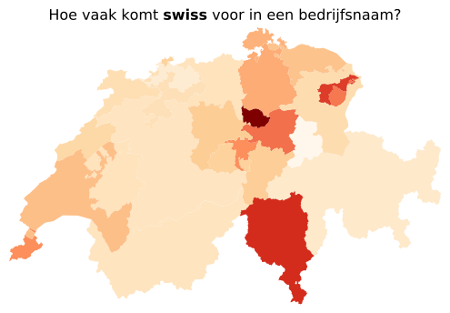
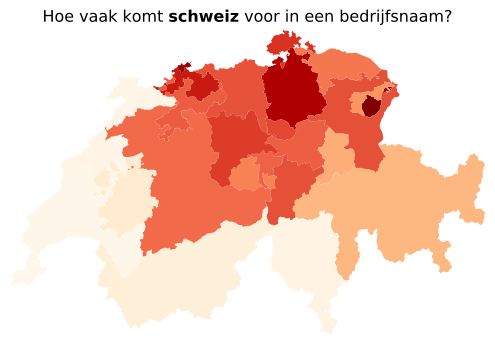
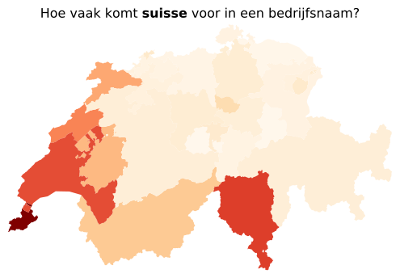
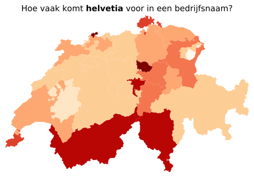

<!DOCTYPE html> <html lang="en" dir="ltr"> <head> <meta charset="UTF-8" /> <meta name="viewport" content="width=device-width, initial-scale=1.0" /> <meta http-equiv="X-UA-Compatible" content="ie=edge" /> <title>Switzerbrand | Dagelijkse dingen in Zwitserland vanuit Nederlands perspectief</title> <link rel="shortcut icon" href="/assets/favicon.ico" type="image/x-icon" /> <link rel="icon" href="/assets/favicon.ico" type="image/x-icon" /> <link href="/feed.xml" rel="alternate" type="application/atom+xml" /> <link rel="canonical" href="/switzerbrand" /> <link rel="stylesheet" href="/assets/style.css" /> <script src="https://beamanalytics.b-cdn.net/beam.min.js" data-token="cb146bf2-0a6b-412a-93fe-f1b766a68e80" async ></script> <link rel="apple-touch-icon" sizes="180x180" href="assets/apple-touch-icon.png" /> <link rel="icon" type="image/png" sizes="32x32" href="assets/favicon-32x32.png" /> <link rel="icon" type="image/png" sizes="16x16" href="assets/favicon-16x16.png" /> <link rel="manifest" href="/site.webmanifest" /> <!-- Begin Jekyll SEO tag v2.8.0 --> <title>Switzerbrand | Dagelijkse dingen in Zwitserland vanuit Nederlands perspectief</title> <meta name="generator" content="Jekyll v4.3.2" /> <meta property="og:title" content="Switzerbrand" /> <meta property="og:locale" content="en_US" /> <meta name="description" content="Het merk Zwitserland is sterk en populair. Veel bedrijven plaatsen de Zwitserse vlag op hun producten, verpakkingen of verwerken het in hun logo. Soms is de landsnaam onderdeel van hun naam. Hieronder volgt een overzicht van hoe vaak dat gebeurt in de drie officiële talen, plus het Engels en Latijn. Niet geheel verrassend is de Engelse, universeel verbindende, taal het populairst. Neem 10,000 willekeurige bedrijven en 183 hebben “Swiss” in hun naam verwerkt. Op twee staat de Duitse spelling, gevolgd door de Franse. Dit is ook niet geheel toevallig, aangezien het Duitse gedeelte meer inwoners heeft dan het Franstalige. Aantal bedrijvennamen die de landsnaam gebruiken per 10,000 (totaal aantal) Swiss █████████████████████████ 183 (13178 totaal) Schweiz ██████████████▌ 107 (7685 totaal) Suisse ████████▎ 61 (4382 totaal) Helvetia ▍ 3 (248 totaal) Svizzera ▍ 3 (190 totaal) Bron: zefix.admin.ch Als we kijken naar hoe de bedrijven zijn verdeeld over het land per taal, krijgen we het onderstaande resultaten. Des te donkerder het rood, des te meer bedrijven er zijn in dat kanton met de landsnaam, relatief gezien. Het is relatief om te voorkomen dat kantons met veel bedrijven altijd bovenaan de lijst staan. In de tabel onder de kaart zijn de resultaten gerangschikt aan de hand van hoe vaak een naam relatief voorkomt. Voor de Engelse spelling “Swiss” is kanton Zug de koploper. Dit komt waarschijnlijk doordat het bedrijven lokt met extra lage belastingen en veel hoofdkantoren er zich hebben gevestigd. De hekkensluiters worden gevormd door de periferie.     per 10k totaal 1 Zug 322 1251 2 Ticino 271 1128 3 Appenzell Ausserrhoden 260 151 … … … … 24 Grisons 128 236 25 Basel Landschaft 124 238 26 Glarus 104 36 Voor “Schweiz” staan er logischerwijs Duitstalige kantons bovenaan en Franstalige onderaan. Dit is ook mooi te zien op het kaartje. Appenzell Innerrhoden staat op één. Wellicht komt dit doordat zij een speciale belastingregeling hebben voor huurauto’s. Basel Stadt wil zich wellicht duidelijk onderscheiden van de Duitstaligen aan de andere kant van de grens.     per 10k totaal 1 Appenzell Innerrhoden 209 42 2 Basel Stadt 196 351 3 Zurich 186 2332 … … … … 24 Jura 10 6 25 Vaud 8 53 26 Geneva 6 30 Voor “Suisse” is er een verrassing: Ticino, het Italiaans sprekende kanton, staat op nummer twee. Voor “Swiss” stonden ze ook al op plaats twee. Wellicht dat ze hier ook gunstige belastingregels hebben. Of ze zijn ze hier patriottischer dan in de rest van het land, of willen zich onderscheiden van hun Italiaanse buren.     per 10k totaal 1 Geneva 186 979 2 Ticino 138 575 3 Vaud 132 826 … … … … 24 Thurgau 18 39 25 Glarus 17 6 26 Obwalden 16 7 Ticino staat hier weinig verrassend op de eerste plaats. In de rest van het land is er weinig belangstelling voor de Italiaanse spelling: buiten Ticino zijn er slechts 26 bedrijven met “Svizerra” in de naam.     per 10k totaal 1 Ticino 39 164 2 Grisons 3 6 3 Nidwalden 2 1 … … … … 24 Basel Landschaft 0 0 25 Zurich 0 5 26 St Gallen 0 1 “Helvetia” is overal ongeveer even impopulair. Met uitzondering van Appenzell Innerrhoden heeft elk kanton een slechts een handvol bedrijven die de Latijnse spelling hanteren.   Kanton per 10k totaal 1 Basel Stadt 7 13 2 Zug 7 26 3 Nidwalden 6 3 … … … … 24 Neuchâtel 2 3 25 Fribourg 1 2 26 Appenzell Innerrhoden 0 0 De grote vraag is nu natuurlijk: hoe vergelijkt Zwitserland met andere Europese landen. Is Zwitserland nou uitzonderlijk trots op hun naam? Of worden de statistieken gedomineerd door internationale bedrijven die ook een vestiging in het land hebben? Wellicht probeer ik nog een keer deze cijfers te vinden. Bron: zefix.admin.ch De code om de resultaten te reproduceren vind je hier." /> <meta property="og:description" content="Het merk Zwitserland is sterk en populair. Veel bedrijven plaatsen de Zwitserse vlag op hun producten, verpakkingen of verwerken het in hun logo. Soms is de landsnaam onderdeel van hun naam. Hieronder volgt een overzicht van hoe vaak dat gebeurt in de drie officiële talen, plus het Engels en Latijn. Niet geheel verrassend is de Engelse, universeel verbindende, taal het populairst. Neem 10,000 willekeurige bedrijven en 183 hebben “Swiss” in hun naam verwerkt. Op twee staat de Duitse spelling, gevolgd door de Franse. Dit is ook niet geheel toevallig, aangezien het Duitse gedeelte meer inwoners heeft dan het Franstalige. Aantal bedrijvennamen die de landsnaam gebruiken per 10,000 (totaal aantal) Swiss █████████████████████████ 183 (13178 totaal) Schweiz ██████████████▌ 107 (7685 totaal) Suisse ████████▎ 61 (4382 totaal) Helvetia ▍ 3 (248 totaal) Svizzera ▍ 3 (190 totaal) Bron: zefix.admin.ch Als we kijken naar hoe de bedrijven zijn verdeeld over het land per taal, krijgen we het onderstaande resultaten. Des te donkerder het rood, des te meer bedrijven er zijn in dat kanton met de landsnaam, relatief gezien. Het is relatief om te voorkomen dat kantons met veel bedrijven altijd bovenaan de lijst staan. In de tabel onder de kaart zijn de resultaten gerangschikt aan de hand van hoe vaak een naam relatief voorkomt. Voor de Engelse spelling “Swiss” is kanton Zug de koploper. Dit komt waarschijnlijk doordat het bedrijven lokt met extra lage belastingen en veel hoofdkantoren er zich hebben gevestigd. De hekkensluiters worden gevormd door de periferie.     per 10k totaal 1 Zug 322 1251 2 Ticino 271 1128 3 Appenzell Ausserrhoden 260 151 … … … … 24 Grisons 128 236 25 Basel Landschaft 124 238 26 Glarus 104 36 Voor “Schweiz” staan er logischerwijs Duitstalige kantons bovenaan en Franstalige onderaan. Dit is ook mooi te zien op het kaartje. Appenzell Innerrhoden staat op één. Wellicht komt dit doordat zij een speciale belastingregeling hebben voor huurauto’s. Basel Stadt wil zich wellicht duidelijk onderscheiden van de Duitstaligen aan de andere kant van de grens.     per 10k totaal 1 Appenzell Innerrhoden 209 42 2 Basel Stadt 196 351 3 Zurich 186 2332 … … … … 24 Jura 10 6 25 Vaud 8 53 26 Geneva 6 30 Voor “Suisse” is er een verrassing: Ticino, het Italiaans sprekende kanton, staat op nummer twee. Voor “Swiss” stonden ze ook al op plaats twee. Wellicht dat ze hier ook gunstige belastingregels hebben. Of ze zijn ze hier patriottischer dan in de rest van het land, of willen zich onderscheiden van hun Italiaanse buren.     per 10k totaal 1 Geneva 186 979 2 Ticino 138 575 3 Vaud 132 826 … … … … 24 Thurgau 18 39 25 Glarus 17 6 26 Obwalden 16 7 Ticino staat hier weinig verrassend op de eerste plaats. In de rest van het land is er weinig belangstelling voor de Italiaanse spelling: buiten Ticino zijn er slechts 26 bedrijven met “Svizerra” in de naam.     per 10k totaal 1 Ticino 39 164 2 Grisons 3 6 3 Nidwalden 2 1 … … … … 24 Basel Landschaft 0 0 25 Zurich 0 5 26 St Gallen 0 1 “Helvetia” is overal ongeveer even impopulair. Met uitzondering van Appenzell Innerrhoden heeft elk kanton een slechts een handvol bedrijven die de Latijnse spelling hanteren.   Kanton per 10k totaal 1 Basel Stadt 7 13 2 Zug 7 26 3 Nidwalden 6 3 … … … … 24 Neuchâtel 2 3 25 Fribourg 1 2 26 Appenzell Innerrhoden 0 0 De grote vraag is nu natuurlijk: hoe vergelijkt Zwitserland met andere Europese landen. Is Zwitserland nou uitzonderlijk trots op hun naam? Of worden de statistieken gedomineerd door internationale bedrijven die ook een vestiging in het land hebben? Wellicht probeer ik nog een keer deze cijfers te vinden. Bron: zefix.admin.ch De code om de resultaten te reproduceren vind je hier." /> <link rel="canonical" href="https://roaldin.ch/switzerbrand" /> <meta property="og:url" content="https://roaldin.ch/switzerbrand" /> <meta property="og:site_name" content="Dagelijkse dingen in Zwitserland vanuit Nederlands perspectief" /> <meta property="og:type" content="article" /> <meta property="article:published_time" content="2023-03-18T00:00:00+00:00" /> <meta name="twitter:card" content="summary" /> <meta property="twitter:title" content="Switzerbrand" /> <script type="application/ld+json"> {"@context":"https://schema.org","@type":"BlogPosting","dateModified":"2023-03-18T00:00:00+00:00","datePublished":"2023-03-18T00:00:00+00:00","description":"Het merk Zwitserland is sterk en populair. Veel bedrijven plaatsen de Zwitserse vlag op hun producten, verpakkingen of verwerken het in hun logo. Soms is de landsnaam onderdeel van hun naam. Hieronder volgt een overzicht van hoe vaak dat gebeurt in de drie officiële talen, plus het Engels en Latijn. Niet geheel verrassend is de Engelse, universeel verbindende, taal het populairst. Neem 10,000 willekeurige bedrijven en 183 hebben “Swiss” in hun naam verwerkt. Op twee staat de Duitse spelling, gevolgd door de Franse. Dit is ook niet geheel toevallig, aangezien het Duitse gedeelte meer inwoners heeft dan het Franstalige. Aantal bedrijvennamen die de landsnaam gebruiken per 10,000 (totaal aantal) Swiss █████████████████████████ 183 (13178 totaal) Schweiz ██████████████▌ 107 (7685 totaal) Suisse ████████▎ 61 (4382 totaal) Helvetia ▍ 3 (248 totaal) Svizzera ▍ 3 (190 totaal) Bron: zefix.admin.ch Als we kijken naar hoe de bedrijven zijn verdeeld over het land per taal, krijgen we het onderstaande resultaten. Des te donkerder het rood, des te meer bedrijven er zijn in dat kanton met de landsnaam, relatief gezien. Het is relatief om te voorkomen dat kantons met veel bedrijven altijd bovenaan de lijst staan. In de tabel onder de kaart zijn de resultaten gerangschikt aan de hand van hoe vaak een naam relatief voorkomt. Voor de Engelse spelling “Swiss” is kanton Zug de koploper. Dit komt waarschijnlijk doordat het bedrijven lokt met extra lage belastingen en veel hoofdkantoren er zich hebben gevestigd. De hekkensluiters worden gevormd door de periferie.     per 10k totaal 1 Zug 322 1251 2 Ticino 271 1128 3 Appenzell Ausserrhoden 260 151 … … … … 24 Grisons 128 236 25 Basel Landschaft 124 238 26 Glarus 104 36 Voor “Schweiz” staan er logischerwijs Duitstalige kantons bovenaan en Franstalige onderaan. Dit is ook mooi te zien op het kaartje. Appenzell Innerrhoden staat op één. Wellicht komt dit doordat zij een speciale belastingregeling hebben voor huurauto’s. Basel Stadt wil zich wellicht duidelijk onderscheiden van de Duitstaligen aan de andere kant van de grens.     per 10k totaal 1 Appenzell Innerrhoden 209 42 2 Basel Stadt 196 351 3 Zurich 186 2332 … … … … 24 Jura 10 6 25 Vaud 8 53 26 Geneva 6 30 Voor “Suisse” is er een verrassing: Ticino, het Italiaans sprekende kanton, staat op nummer twee. Voor “Swiss” stonden ze ook al op plaats twee. Wellicht dat ze hier ook gunstige belastingregels hebben. Of ze zijn ze hier patriottischer dan in de rest van het land, of willen zich onderscheiden van hun Italiaanse buren.     per 10k totaal 1 Geneva 186 979 2 Ticino 138 575 3 Vaud 132 826 … … … … 24 Thurgau 18 39 25 Glarus 17 6 26 Obwalden 16 7 Ticino staat hier weinig verrassend op de eerste plaats. In de rest van het land is er weinig belangstelling voor de Italiaanse spelling: buiten Ticino zijn er slechts 26 bedrijven met “Svizerra” in de naam.     per 10k totaal 1 Ticino 39 164 2 Grisons 3 6 3 Nidwalden 2 1 … … … … 24 Basel Landschaft 0 0 25 Zurich 0 5 26 St Gallen 0 1 “Helvetia” is overal ongeveer even impopulair. Met uitzondering van Appenzell Innerrhoden heeft elk kanton een slechts een handvol bedrijven die de Latijnse spelling hanteren.   Kanton per 10k totaal 1 Basel Stadt 7 13 2 Zug 7 26 3 Nidwalden 6 3 … … … … 24 Neuchâtel 2 3 25 Fribourg 1 2 26 Appenzell Innerrhoden 0 0 De grote vraag is nu natuurlijk: hoe vergelijkt Zwitserland met andere Europese landen. Is Zwitserland nou uitzonderlijk trots op hun naam? Of worden de statistieken gedomineerd door internationale bedrijven die ook een vestiging in het land hebben? Wellicht probeer ik nog een keer deze cijfers te vinden. Bron: zefix.admin.ch De code om de resultaten te reproduceren vind je hier.","headline":"Switzerbrand","mainEntityOfPage":{"@type":"WebPage","@id":"https://roaldin.ch/switzerbrand"},"url":"https://roaldin.ch/switzerbrand"}</script> <!-- End Jekyll SEO tag --> </head> <body></body> </html> <main> <h2 class="title">Dagelijkse dingen in Zwitserland vanuit Nederlands perspectief</h2> <nav> <a href="https://roaldin.ch">Home</a> <a href="https://roaldin.ch/blog">Blog</a> <a href="https://roaldin.ch/about-me">Over mij</a> </nav> <link rel="icon" href="data:image/svg+xml,<svg xmlns=%22http://www.w3.org/2000/svg%22 viewBox=%220 0 100 100%22><text y=%22.9em%22 font-size=%2290%22>🇨🇭</text></svg>" /> <h1>Switzerbrand</h1> <i>Mar 18, 2023</i> <h4 class="subtitle"></h4> <p>Het merk Zwitserland is sterk en populair. Veel bedrijven plaatsen de Zwitserse vlag op hun producten, verpakkingen of verwerken het in hun logo. Soms is de landsnaam onderdeel van hun naam. Hieronder volgt een overzicht van hoe vaak dat gebeurt in de drie officiële talen, plus het Engels en Latijn.</p> <p>Niet geheel verrassend is de Engelse, universeel verbindende, taal het populairst. Neem 10,000 willekeurige bedrijven en 183 hebben “Swiss” in hun naam verwerkt. Op twee staat de Duitse spelling, gevolgd door de Franse. Dit is ook niet geheel toevallig, aangezien het Duitse gedeelte meer inwoners heeft dan het Franstalige.</p> <div class="language-plaintext highlighter-rouge"><div class="highlight"><pre class="highlight"><code>Aantal bedrijvennamen die de landsnaam gebruiken
per 10,000 (totaal aantal)

   Swiss █████████████████████████  183 (13178 totaal)
 Schweiz ██████████████▌  107 (7685 totaal)
  Suisse ████████▎   61 (4382 totaal)
Helvetia ▍    3 (248 totaal)
Svizzera ▍    3 (190 totaal)

Bron: zefix.admin.ch
</code></pre></div></div> <p>Als we kijken naar hoe de bedrijven zijn verdeeld over het land per taal, krijgen we het onderstaande resultaten. Des te donkerder het rood, des te meer bedrijven er zijn in dat kanton met de landsnaam, relatief gezien. Het is relatief om te voorkomen dat kantons met veel bedrijven altijd bovenaan de lijst staan. In de tabel onder de kaart zijn de resultaten gerangschikt aan de hand van hoe vaak een naam relatief voorkomt.</p> <p>Voor de Engelse spelling “Swiss” is kanton Zug de koploper. Dit komt waarschijnlijk doordat het bedrijven lokt met extra lage belastingen en veel hoofdkantoren er zich hebben gevestigd. De hekkensluiters worden gevormd door de periferie.</p> <p></p> <table> <thead> <tr> <th> </th> <th> </th> <th>per 10k</th> <th>totaal</th> </tr> </thead> <tbody> <tr> <td>1</td> <td>Zug</td> <td>322</td> <td>1251</td> </tr> <tr> <td>2</td> <td>Ticino</td> <td>271</td> <td>1128</td> </tr> <tr> <td>3</td> <td>Appenzell Ausserrhoden</td> <td>260</td> <td>151</td> </tr> <tr> <td>…</td> <td>…</td> <td>…</td> <td>…</td> </tr> <tr> <td>24</td> <td>Grisons</td> <td>128</td> <td>236</td> </tr> <tr> <td>25</td> <td>Basel Landschaft</td> <td>124</td> <td>238</td> </tr> <tr> <td>26</td> <td>Glarus</td> <td>104</td> <td>36</td> </tr> </tbody> </table> <p>Voor “Schweiz” staan er logischerwijs Duitstalige kantons bovenaan en Franstalige onderaan. Dit is ook mooi te zien op het kaartje. Appenzell Innerrhoden staat op één. Wellicht komt dit doordat zij een speciale belastingregeling hebben voor huurauto’s. Basel Stadt wil zich wellicht duidelijk onderscheiden van de Duitstaligen aan de andere kant van de grens.</p> <p></p> <table> <thead> <tr> <th> </th> <th> </th> <th>per 10k</th> <th>totaal</th> </tr> </thead> <tbody> <tr> <td>1</td> <td>Appenzell Innerrhoden</td> <td>209</td> <td>42</td> </tr> <tr> <td>2</td> <td>Basel Stadt</td> <td>196</td> <td>351</td> </tr> <tr> <td>3</td> <td>Zurich</td> <td>186</td> <td>2332</td> </tr> <tr> <td>…</td> <td>…</td> <td>…</td> <td>…</td> </tr> <tr> <td>24</td> <td>Jura</td> <td>10</td> <td>6</td> </tr> <tr> <td>25</td> <td>Vaud</td> <td>8</td> <td>53</td> </tr> <tr> <td>26</td> <td>Geneva</td> <td>6</td> <td>30</td> </tr> </tbody> </table> <p>Voor “Suisse” is er een verrassing: Ticino, het Italiaans sprekende kanton, staat op nummer twee. Voor “Swiss” stonden ze ook al op plaats twee. Wellicht dat ze hier ook gunstige belastingregels hebben. Of ze zijn ze hier patriottischer dan in de rest van het land, of willen zich onderscheiden van hun Italiaanse buren.</p> <p></p> <table> <thead> <tr> <th> </th> <th> </th> <th>per 10k</th> <th>totaal</th> </tr> </thead> <tbody> <tr> <td>1</td> <td>Geneva</td> <td>186</td> <td>979</td> </tr> <tr> <td>2</td> <td>Ticino</td> <td>138</td> <td>575</td> </tr> <tr> <td>3</td> <td>Vaud</td> <td>132</td> <td>826</td> </tr> <tr> <td>…</td> <td>…</td> <td>…</td> <td>…</td> </tr> <tr> <td>24</td> <td>Thurgau</td> <td>18</td> <td>39</td> </tr> <tr> <td>25</td> <td>Glarus</td> <td>17</td> <td>6</td> </tr> <tr> <td>26</td> <td>Obwalden</td> <td>16</td> <td>7</td> </tr> </tbody> </table> <p>Ticino staat hier weinig verrassend op de eerste plaats. In de rest van het land is er weinig belangstelling voor de Italiaanse spelling: buiten Ticino zijn er slechts 26 bedrijven met “Svizerra” in de naam.</p> <p></p> <table> <thead> <tr> <th> </th> <th> </th> <th>per 10k</th> <th>totaal</th> </tr> </thead> <tbody> <tr> <td>1</td> <td>Ticino</td> <td>39</td> <td>164</td> </tr> <tr> <td>2</td> <td>Grisons</td> <td>3</td> <td>6</td> </tr> <tr> <td>3</td> <td>Nidwalden</td> <td>2</td> <td>1</td> </tr> <tr> <td>…</td> <td>…</td> <td>…</td> <td>…</td> </tr> <tr> <td>24</td> <td>Basel Landschaft</td> <td>0</td> <td>0</td> </tr> <tr> <td>25</td> <td>Zurich</td> <td>0</td> <td>5</td> </tr> <tr> <td>26</td> <td>St Gallen</td> <td>0</td> <td>1</td> </tr> </tbody> </table> <p>“Helvetia” is overal ongeveer even impopulair. Met uitzondering van Appenzell Innerrhoden heeft elk kanton een slechts een handvol bedrijven die de Latijnse spelling hanteren.</p> <p></p> <table> <thead> <tr> <th> </th> <th>Kanton</th> <th>per 10k</th> <th>totaal</th> </tr> </thead> <tbody> <tr> <td>1</td> <td>Basel Stadt</td> <td>7</td> <td>13</td> </tr> <tr> <td>2</td> <td>Zug</td> <td>7</td> <td>26</td> </tr> <tr> <td>3</td> <td>Nidwalden</td> <td>6</td> <td>3</td> </tr> <tr> <td>…</td> <td>…</td> <td>…</td> <td>…</td> </tr> <tr> <td>24</td> <td>Neuchâtel</td> <td>2</td> <td>3</td> </tr> <tr> <td>25</td> <td>Fribourg</td> <td>1</td> <td>2</td> </tr> <tr> <td>26</td> <td>Appenzell Innerrhoden</td> <td>0</td> <td>0</td> </tr> </tbody> </table> <p>De grote vraag is nu natuurlijk: hoe vergelijkt Zwitserland met andere Europese landen. Is Zwitserland nou uitzonderlijk trots op hun naam? Of worden de statistieken gedomineerd door internationale bedrijven die ook een vestiging in het land hebben? Wellicht probeer ik nog een keer deze cijfers te vinden.</p> <hr /> <p>Bron: zefix.admin.ch</p> <p>De code om de resultaten te reproduceren vind je <a href="https://github.com/roald87/switzerbrand">hier</a>.</p> </main> <div style="float: left; width: 50%; margin-bottom: 25px"> <a href="/referenda">❮ Referenda</a> </div> <div style="float: right; width: 50%; text-align: right; margin-bottom: 25px"> <a href="/afvalzakken">Afvalzakken ❯</a> </div> <script src="https://giscus.app/client.js" data-repo="roald87/roaldin.ch" data-repo-id="R_kgDOJWf-rw" data-category="Announcements" data-category-id="DIC_kwDOJWf-r84CWlMz" data-mapping="pathname" data-strict="0" data-reactions-enabled="1" data-emit-metadata="0" data-input-position="top" data-theme="light" data-lang="en" data-loading="lazy" crossorigin="anonymous" async ></script>
